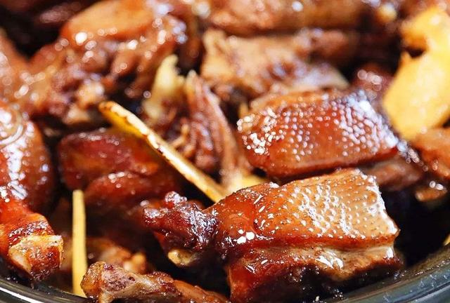

薑母鴨
至商代有名醫吳仲，用麻仁油炖紅面番鴨肉再加姜母（姜母指三年以上的老姜）燒酒炖煮，香鮮甘辛具備，
食后精神振昂，頓覺全身經脈舒暢，因而大受君王贊賞嗜食，被奉為滋養進補聖品。
前面提到的紅面番鴨為禽類中血性剛烈者，生命力特強，肉呈鮮紅，精力昂足，秉性溫和愛潔，經漢醫研究與實驗證明為禽類中最具有藥效之食補品。
加姜酒炖煮其性辛熱，服之暢血化痰，療治中焦之虛寒、疏肝潤肝、健脾胃、促消化、祛風寒，通血脈、尤對腳麻手痹、胃酸、胃寒更見功效。

滷肉飯
三杯雞
花生豬腳
心得